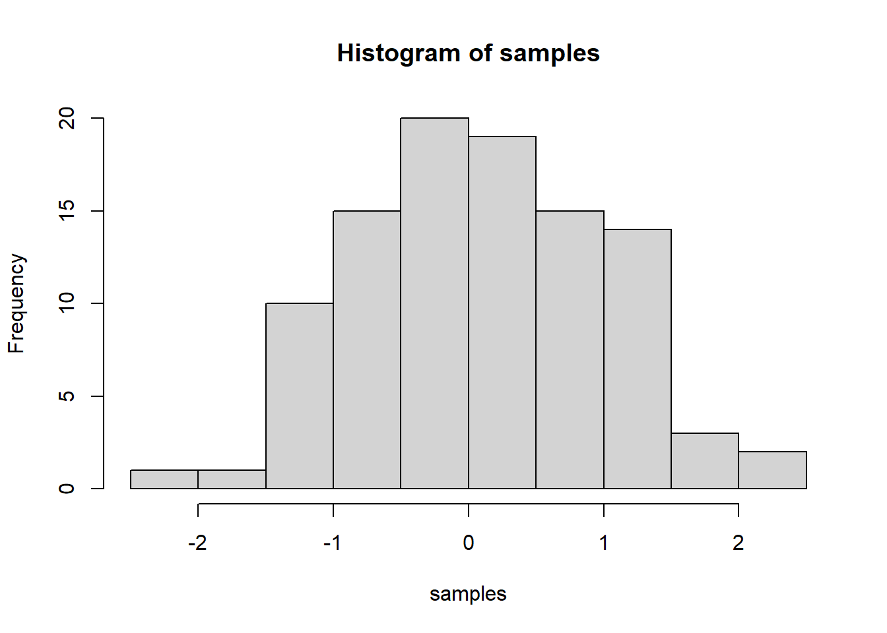
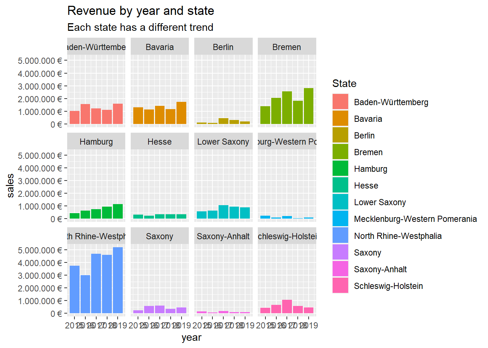
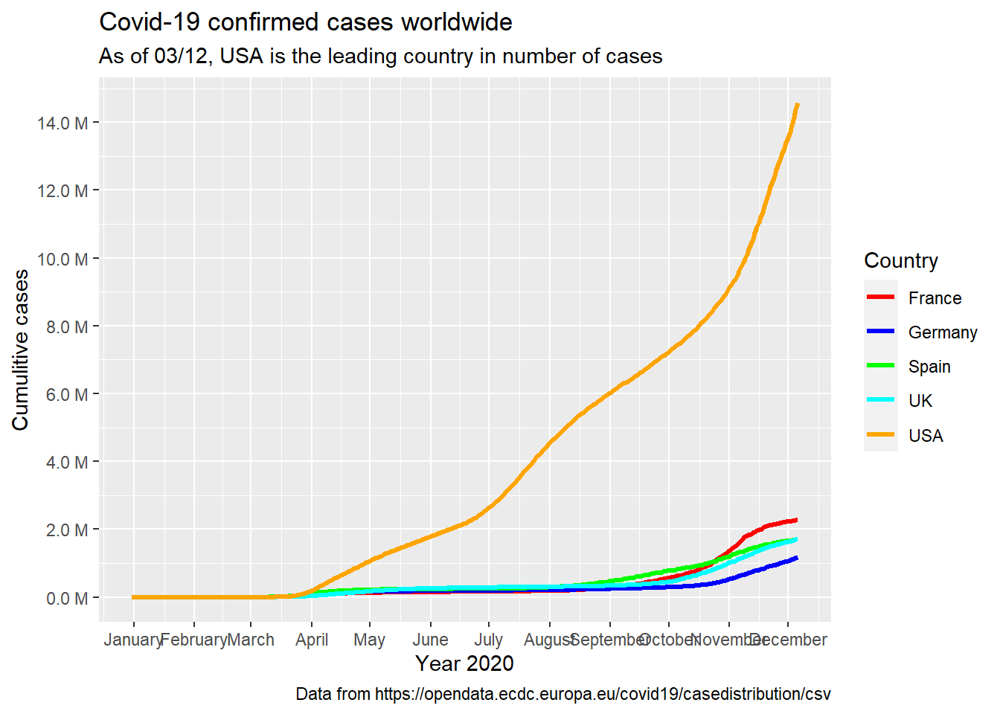
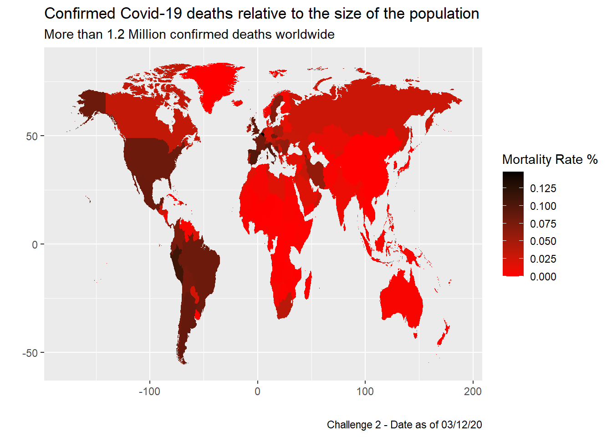

IMPORTANT: You can delete everything in here and start fresh. You might want to start by not deleting anything above this line until you know what that stuff is doing.
This is an .Rmd file. It is plain text with special features. Any time you write just like this, it will be compiled to normal text in the website. If you put a # in front of your text, it will create a top level-header.
Last compiled: 2020-12-03
Notice that whatever you define as a top level header, automatically gets put into the table of contents bar on the left.
## First challenge task
# Data Science at TUHH ------------------------------------------------------
# SALES ANALYSIS ----
# 1.0 Load libraries ----
library(tidyverse)
library(readxl)
options(repos="https://cran.rstudio.com" )
# 2.0 Importing Files ----
bikes_tbl <- read_excel(path = "00_data/01_bike_sales/01_raw_data/bikes.xlsx")
orderlines_tbl <- read_excel("00_data/01_bike_sales/01_raw_data/orderlines.xlsx")
bikeshops_tbl <- read_excel("00_data/01_bike_sales/01_raw_data/bikeshops.xlsx")
# 3.0 Examining Data ----
orderlines_tbl## # A tibble: 15,644 x 7
## ...1 order.id order.line order.date customer.id product.id quantity
## <chr> <dbl> <dbl> <dttm> <dbl> <dbl> <dbl>
## 1 1 1 1 2015-01-07 00:00:00 2 2681 1
## 2 2 1 2 2015-01-07 00:00:00 2 2411 1
## 3 3 2 1 2015-01-10 00:00:00 10 2629 1
## 4 4 2 2 2015-01-10 00:00:00 10 2137 1
## 5 5 3 1 2015-01-10 00:00:00 6 2367 1
## 6 6 3 2 2015-01-10 00:00:00 6 1973 1
## 7 7 3 3 2015-01-10 00:00:00 6 2422 1
## 8 8 3 4 2015-01-10 00:00:00 6 2655 1
## 9 9 3 5 2015-01-10 00:00:00 6 2247 1
## 10 10 4 1 2015-01-11 00:00:00 22 2408 1
## # ... with 15,634 more rowsglimpse(orderlines_tbl)## Rows: 15,644
## Columns: 7
## $ ...1 <chr> "1", "2", "3", "4", "5", "6", "7", "8", "9", "10", "11"...
## $ order.id <dbl> 1, 1, 2, 2, 3, 3, 3, 3, 3, 4, 5, 5, 5, 5, 6, 6, 6, 6, 7...
## $ order.line <dbl> 1, 2, 1, 2, 1, 2, 3, 4, 5, 1, 1, 2, 3, 4, 1, 2, 3, 4, 1...
## $ order.date <dttm> 2015-01-07, 2015-01-07, 2015-01-10, 2015-01-10, 2015-0...
## $ customer.id <dbl> 2, 2, 10, 10, 6, 6, 6, 6, 6, 22, 8, 8, 8, 8, 16, 16, 16...
## $ product.id <dbl> 2681, 2411, 2629, 2137, 2367, 1973, 2422, 2655, 2247, 2...
## $ quantity <dbl> 1, 1, 1, 1, 1, 1, 1, 1, 1, 1, 1, 2, 1, 1, 1, 1, 1, 1, 1...# 4.0 Joining Data ----
bike_orderlines_joined_tbl <- orderlines_tbl %>%
left_join(bikes_tbl, by = c("product.id" = "bike.id")) %>%
left_join(bikeshops_tbl, by = c("customer.id" = "bikeshop.id"))
# 5.0 Wrangling Data ----
bike_orderlines_wrangled_tbl <- bike_orderlines_joined_tbl %>%
separate(col = location,
into = c("city", "state"),
sep = ", ") %>%
mutate(total.price = price * quantity)
# 6.0 Business Insights ----
# 6.1 Sales by State ----
library(lubridate)
# Step 1 - Manipulate
sales_by_state_tbl <- bike_orderlines_wrangled_tbl %>%
select(state, total.price) %>%
group_by(state) %>%
summarize(sales = sum(total.price)) %>%
mutate(sales_text = scales::dollar(sales, big.mark = ".",
decimal.mark = ",",
prefix = "",
suffix = " €"))
sales_by_state_tbl %>%
# Step 2 - Visualize
# Setup canvas with the columns year (x-axis) and sales (y-axis)
ggplot(aes(x = state, y = sales)) +
# Geometries
geom_col(fill = "#2DC6D6") + # Use geom_col for a bar plot
geom_label(aes(label = sales_text)) +
geom_smooth(method = "lm", se = FALSE) + # Adding a trendline
theme(axis.text.x = element_text(angle = 45, hjust = 1)) + # Adding labels to the bars
# Formatting
scale_y_continuous(labels = scales::dollar_format(big.mark = ".",
decimal.mark = ",",
prefix = "",
suffix = " €")) +
labs(
title = "Revenue by state",
subtitle = "",
x = "", # Override defaults for x and y
y = "Revenue"
)
# 6.2 Sales by Year and State ----
# Step 1 - Manipulate
sales_by_year_state_tbl <- bike_orderlines_wrangled_tbl %>%
# Select columns and add a year
select(order.date, total.price, state) %>%
mutate(year = year(order.date)) %>%
# Group by and summarize year and main catgegory
group_by(year, state) %>%
summarise(sales = sum(total.price)) %>%
ungroup() %>%
# Format $ Text
mutate(sales_text = scales::dollar(sales, big.mark = ".",
decimal.mark = ",",
prefix = "",
suffix = " €"))
sales_by_year_state_tbl ## # A tibble: 60 x 4
## year state sales sales_text
## <dbl> <chr> <dbl> <chr>
## 1 2015 Baden-Württemberg 1031924 1.031.924 €
## 2 2015 Bavaria 1301461 1.301.461 €
## 3 2015 Berlin 95853 95.853 €
## 4 2015 Bremen 1395912 1.395.912 €
## 5 2015 Hamburg 423090 423.090 €
## 6 2015 Hesse 308609 308.609 €
## 7 2015 Lower Saxony 584386 584.386 €
## 8 2015 Mecklenburg-Western Pomerania 222003 222.003 €
## 9 2015 North Rhine-Westphalia 3735092 3.735.092 €
## 10 2015 Saxony 238371 238.371 €
## # ... with 50 more rows# Step 2 - Visualize
sales_by_year_state_tbl %>%
# Set up x, y, fill
ggplot(aes(x = year, y = sales, fill = state)) +
# Geometries
geom_col() + # Run up to here to get a stacked bar plot
# Facet
facet_wrap(~ state) +
# Formatting
scale_y_continuous(labels = scales::dollar_format(big.mark = ".",
decimal.mark = ",",
prefix = "",
suffix = " €")) +
labs(
title = "Revenue by year and state",
subtitle = "Each state has a different trend",
fill = "State" # Changes the legend name
)
# 7.0 Writing Files ----
# 7.1 Excel ----
install.packages("writexl")
library("writexl")
# bike_orderlines_wrangled_tbl %>%
# write_xlsx("00_data/01_bike_sales/02_wrangled_data/bike_orderlines.xlsx")
#
# # 7.2 CSV ----
# bike_orderlines_wrangled_tbl %>%
# write_csv("00_data/01_bike_sales/02_wrangled_data/bike_orderlines.csv")
# 7.3 RDS ----
bike_orderlines_wrangled_tbl %>%
write_rds("00_data/01_bike_sales/02_wrangled_data/bike_orderlines.rds")# Challenge 1 - API ----
library(httr)
library(jsonlite)
library(dplyr)
library(RSQLite)
library(dplyr)
library(tibble)
library(rvest)
#Covid-19 Germany statistics
url <- "https://api.covid19api.com/dayone/country/germany/status/confirmed"
resp <- GET(url)
list <- resp %>%
.$content %>%
rawToChar() %>%
fromJSON() %>%
head(10)
list## Country CountryCode Province City CityCode Lat Lon Cases Status
## 1 Germany DE 51.17 10.45 1 confirmed
## 2 Germany DE 51.17 10.45 4 confirmed
## 3 Germany DE 51.17 10.45 4 confirmed
## 4 Germany DE 51.17 10.45 4 confirmed
## 5 Germany DE 51.17 10.45 5 confirmed
## 6 Germany DE 51.17 10.45 8 confirmed
## 7 Germany DE 51.17 10.45 10 confirmed
## 8 Germany DE 51.17 10.45 12 confirmed
## 9 Germany DE 51.17 10.45 12 confirmed
## 10 Germany DE 51.17 10.45 12 confirmed
## Date
## 1 2020-01-27T00:00:00Z
## 2 2020-01-28T00:00:00Z
## 3 2020-01-29T00:00:00Z
## 4 2020-01-30T00:00:00Z
## 5 2020-01-31T00:00:00Z
## 6 2020-02-01T00:00:00Z
## 7 2020-02-02T00:00:00Z
## 8 2020-02-03T00:00:00Z
## 9 2020-02-04T00:00:00Z
## 10 2020-02-05T00:00:00Z#Challenge 2 - Web Scraping
bike_webscraping <- function(url) {
bike_html <- read_html(url)
bike_url_tbl <- bike_html %>%
html_nodes(css = ".product-tile-title__brand") %>%
html_text()%>%
enframe(name = "#", value = "Bike")
bike_database_tbl<-bike_url_tbl%>%
mutate(price= bike_html%>%
html_nodes(css =".product-tile-price__current-value ")%>% html_text())
}
url= "https://www.rosebikes.de/fahrräder/kinder"
bike_prices<-bike_webscraping(url)
saveRDS(bike_prices,"challenge-data_acquistion.rds")
bike_prices## # A tibble: 10 x 3
## `#` Bike price
## <int> <chr> <chr>
## 1 1 "\nROSE\n" "\n129,00 €\n"
## 2 2 "\nEarly Rider\n" "\n169,95 €\n"
## 3 3 "\nEarly Rider\n" "\n379,95 €\n"
## 4 4 "\nEarly Rider\n" "\n399,95 €\n"
## 5 5 "\nEarly Rider\n" "\n399,95 €\n"
## 6 6 "\nEarly Rider\n" "\n399,95 €\n"
## 7 7 "\nEarly Rider\n" "\n599,00 €\n"
## 8 8 "\nEarly Rider\n" "\n549,99 €\n"
## 9 9 "\nEarly Rider\n" "\n649,00 €\n"
## 10 10 "\nEarly Rider\n" "\n724,95 €\n"library(vroom)
library(tidyverse)
library(data.table)
library(tictoc)
library(dbplyr)
library(lubridate)
## First the imports:
col_types <- list(
id = col_character(),
type = col_skip(),
number = col_skip(),
country = col_skip(),
date = col_date("%Y-%m-%d"),
abstract = col_skip(),
title = col_skip(),
kind = col_skip(),
num_claims = col_skip(),
filename = col_skip(),
withdrawn = col_double()
)
patent_tbl <- vroom(
file = "patent.tsv",
delim = "\t",
col_types = col_types,
na = c("", "NA", "NULL")
)
#import assignee.tsv
col_types2 <- list(
id = col_character(),
type = col_character(),
name_first = col_skip(),
name_last = col_skip(),
organization = col_character()
)
assignee_tbl <- vroom(
file = "assignee.tsv",
delim = "\t",
col_types = col_types2,
na = c("", "NA", "NULL")
)
# import patent_assignee.tsv
col_types3 <- list(
patent_id = col_character(),
assignee_id = col_character(),
location_id = col_skip()
)
patentassignee_tbl <- vroom(
file = "patent_assignee.tsv",
delim = "\t",
col_types = col_types3,
na = c("", "NA", "NULL")
)
# Patent ----
class(patent_tbl)## [1] "tbl_df" "tbl" "data.frame"setDT(patent_tbl)
# Patent Assignee ----
class(patentassignee_tbl)## [1] "tbl_df" "tbl" "data.frame"setDT(patentassignee_tbl)
# Assignee ----
class(assignee_tbl)## [1] "tbl_df" "tbl" "data.frame"setDT(assignee_tbl)
# Question One
#rename assignee_id to id to match pattent_assignee.tsv
setnames(patentassignee_tbl, "assignee_id", "id")
tic()
combined_data <- merge(x = patentassignee_tbl, y = assignee_tbl,
by = "id",
all.x = TRUE,
all.y = TRUE)
toc()## 17.55 sec elapsed# Selecting only US company/corporation (type 2), then summing unique patent ids
setorderv(combined_data, c("type", "organization"))
combined_data_type2 <- combined_data %>%
filter(type == 2)
number_distinct_patents_tbl <- combined_data_type2[, .(number_of_distinct_patents = length(unique(patent_id))), by = organization]
head(arrange(number_distinct_patents_tbl,desc(number_of_distinct_patents)), n = 10)## organization number_of_distinct_patents
## 1: International Business Machines Corporation 139091
## 2: General Electric Company 47121
## 3: Intel Corporation 42149
## 4: Hewlett-Packard Development Company, L.P. 35573
## 5: Microsoft Corporation 30086
## 6: Micron Technology, Inc. 28001
## 7: QUALCOMM Incorporated 24703
## 8: Texas Instruments Incorporated 24182
## 9: Xerox Corporation 23174
## 10: Apple Inc. 21821#Question Two
#adding the year from patent_tbl and filtering by 2019
setnames(patent_tbl, "id", "patent_id")
combined_data_type2 <- merge(x = combined_data_type2, y = patent_tbl,
by = "patent_id",
all.x = TRUE,
all.y = TRUE)
patents_2019 <- combined_data_type2 %>%
mutate(year = year(date)) %>%
filter(year == 2019)
#displaying the first 11 entries (as first is NA)
patents_2019_freq <- patents_2019[, .(number = length(unique(patent_id))), by = organization]
head(arrange(patents_2019_freq,desc(number)), n = 11)## organization number
## 1: <NA> 214011
## 2: International Business Machines Corporation 9265
## 3: Intel Corporation 3525
## 4: Microsoft Technology Licensing, LLC 3106
## 5: Apple Inc. 2817
## 6: Ford Global Technologies, LLC 2624
## 7: Amazon Technologies, Inc. 2533
## 8: QUALCOMM Incorporated 2359
## 9: Google Inc. 2290
## 10: General Electric Company 1860
## 11: Hewlett-Packard Development Company, L.P. 1589#Question Three
col_types4 <- list(
uuid = col_skip(),
patent_id = col_character(),
mainclass_id = col_character(),
subclass_id = col_skip(),
sequence = col_skip()
)
uspc_tbl <- vroom(
file = "uspc.tsv",
delim = "\t",
col_types = col_types4,
na = c("", "NA", "NULL")
)
class(uspc_tbl)## [1] "tbl_df" "tbl" "data.frame"setDT(uspc_tbl)
combined_data_uspc <- merge(x = combined_data, y = uspc_tbl,
by = "patent_id",
all.x = TRUE,
all.y = TRUE)
combined_data_uspc_wrang <- combined_data_uspc[, .(number_of_distinct_patents = length(unique(patent_id))), by = mainclass_id]
head(arrange(combined_data_uspc_wrang,desc(number_of_distinct_patents)), n = 10)## mainclass_id number_of_distinct_patents
## 1: <NA> 2172485
## 2: 257 148796
## 3: 428 125576
## 4: 435 119685
## 5: 514 118258
## 6: 424 110764
## 7: 370 110590
## 8: 438 108537
## 9: 455 108016
## 10: 340 93575library(tidyverse)
library(maps)
library(dplyr)
library(lubridate)
library(scales)
#Challenge 1 -----------------------------------------
#Imports ----
covid_data_tbl <- read_csv("https://opendata.ecdc.europa.eu/covid19/casedistribution/csv")
world <- map_data("world")
#Wrangling -----
covid_data_tbl <- covid_data_tbl %>%
mutate(across(countriesAndTerritories, str_replace_all, "_", " ")) %>%
mutate(countriesAndTerritories = case_when(
countriesAndTerritories == "United Kingdom" ~ "UK",
countriesAndTerritories == "United States of America" ~ "USA",
countriesAndTerritories == "Czechia" ~ "Czech Republic",
TRUE ~ countriesAndTerritories
))
covid_data_tbl <- covid_data_tbl %>% filter(
countriesAndTerritories %in% c("Germany","France","UK","Spain","USA")
)
#change dateRep to date column type
covid_data_tbl <- covid_data_tbl %>%
group_by(dateRep) %>%
mutate(dateRep=as.Date(dateRep, format = "%d/%m/%Y"))
# sort by country then arrange by date in ascending order
covid_data_tbl <- covid_data_tbl %>%
group_by(countriesAndTerritories) %>%
arrange(dateRep, by_group = TRUE) %>%
arrange(countriesAndTerritories) %>%
ungroup()
#calculate cumulative sums
covid_data_tbl <- covid_data_tbl %>%
select(dateRep, cases, deaths, popData2019, countriesAndTerritories) %>%
group_by(countriesAndTerritories)
covid_data_tbl$csum <- ave(covid_data_tbl$cases, covid_data_tbl$countriesAndTerritories, FUN=cumsum)
#Visualization ----
covid_data_tbl %>%
ggplot(aes(x = dateRep, y = csum, color = countriesAndTerritories)) +
geom_line(size = 1.2, linetype = 1) +
scale_x_date(date_breaks = "1 month", date_labels = "%B") +
scale_y_continuous(n.breaks = 10, labels = unit_format(unit = "M", scale = 1e-6)) +
scale_colour_manual(values = c("red", "blue", "green", "cyan", "orange")) +
labs(
title = "Covid-19 confirmed cases worldwide",
subtitle = "As of 03/12, USA is the leading country in number of cases",
caption = "Data from https://opendata.ecdc.europa.eu/covid19/casedistribution/csv",
x = "Year 2020",
y = "Cumulitive cases",
color = "Country" # Legend text
)
#Challenge 2 -------------------------------------------------------------------------------
#Imports ----
covid_data_tbl_2 <- read_csv("https://opendata.ecdc.europa.eu/covid19/casedistribution/csv")
world <- map_data("world")
#Wrangling -----
covid_data_tbl_2 <- covid_data_tbl_2 %>%
mutate(across(countriesAndTerritories, str_replace_all, "_", " ")) %>%
mutate(countriesAndTerritories = case_when(
countriesAndTerritories == "United Kingdom" ~ "UK",
countriesAndTerritories == "United States of America" ~ "USA",
countriesAndTerritories == "Czechia" ~ "Czech Republic",
TRUE ~ countriesAndTerritories
))
#change dateRep to date column type
covid_data_tbl_2 <- covid_data_tbl_2 %>%
group_by(dateRep) %>%
mutate(dateRep=as.Date(dateRep, format = "%d/%m/%Y"))
# sort by country then arrange by date in ascending order
covid_data_tbl_2 <- covid_data_tbl_2 %>%
group_by(countriesAndTerritories) %>%
arrange(dateRep, by_group = TRUE) %>%
arrange(countriesAndTerritories) %>%
ungroup()
covid_data_deaths <- covid_data_tbl_2 %>%
group_by(countriesAndTerritories, popData2019) %>%
summarize(total_deaths = sum(deaths)) %>%
ungroup() %>%
mutate(mortalityrate = (total_deaths / popData2019) *100) %>%
mutate(mortalityrate_text = scales::dollar(mortalityrate, big.mark = ",", decimal.mark = ".", prefix = "", suffix = "%"))
world <- plyr::rename(
world,
replace = c(region="countriesAndTerritories", foo="missing_varible"),
warn_missing = FALSE
)
covid_data_deaths <- covid_data_deaths %>%
merge(y = world, by = "countriesAndTerritories", all.x = FALSE, all.y = FALSE)
world <- plyr::rename(
world,
replace = c(countriesAndTerritories="region", foo="missing_varible"),
warn_missing = FALSE
)
covid_data_deaths %>%
ggplot(aes(map_id = countriesAndTerritories )) +
scale_fill_gradient(low="red", high="black", name = "Mortality Rate %", n.breaks = 6) +
geom_map(aes(fill = mortalityrate), map = world) +
expand_limits(x = covid_data_deaths$long, y = covid_data_deaths$lat) +
labs(
title = "Confirmed Covid-19 deaths relative to the size of the population",
subtitle = "More than 1.2 Million confirmed deaths worldwide",
caption = "Challenge 2 - Date as of 03/12/20",
x = "",
y = ""
)
Last compiled: 2020-12-03